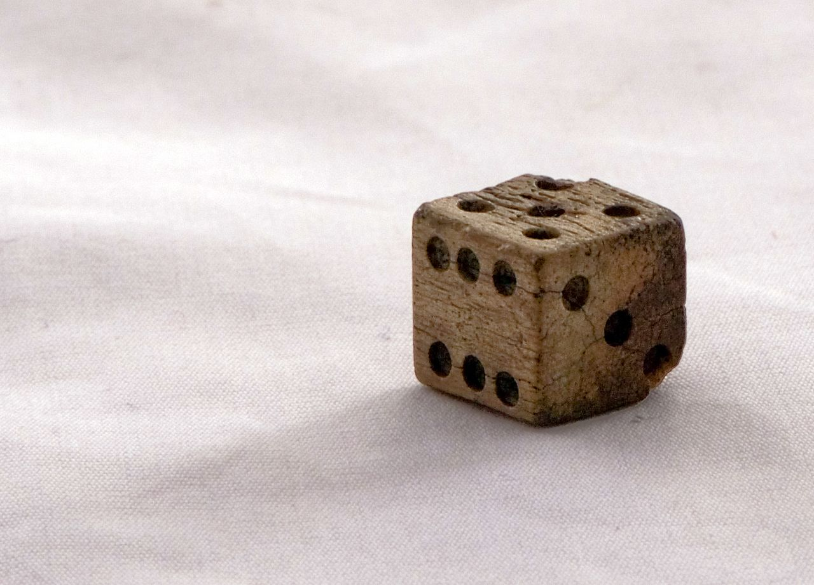
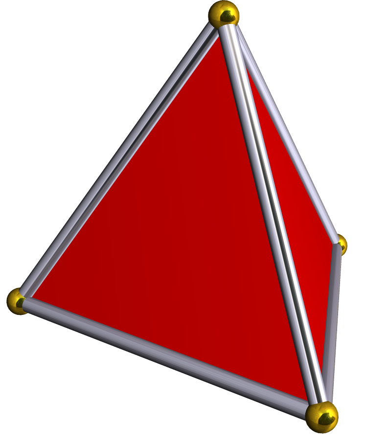
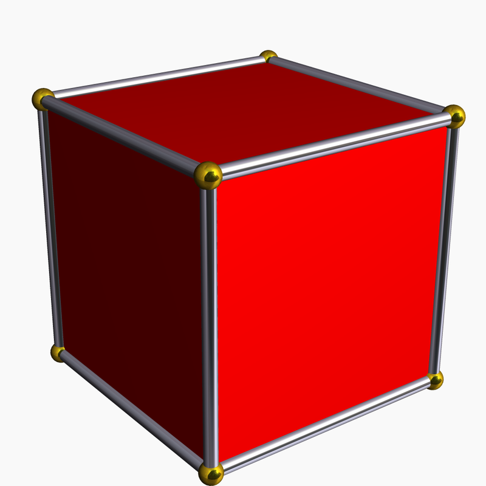
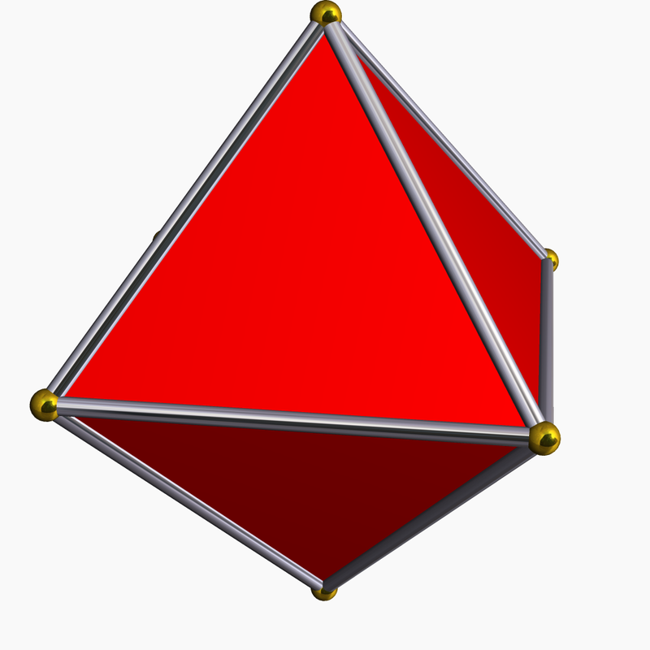
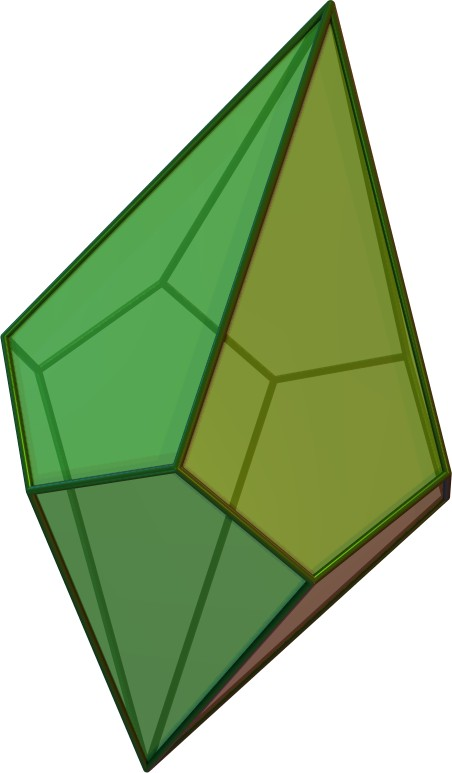
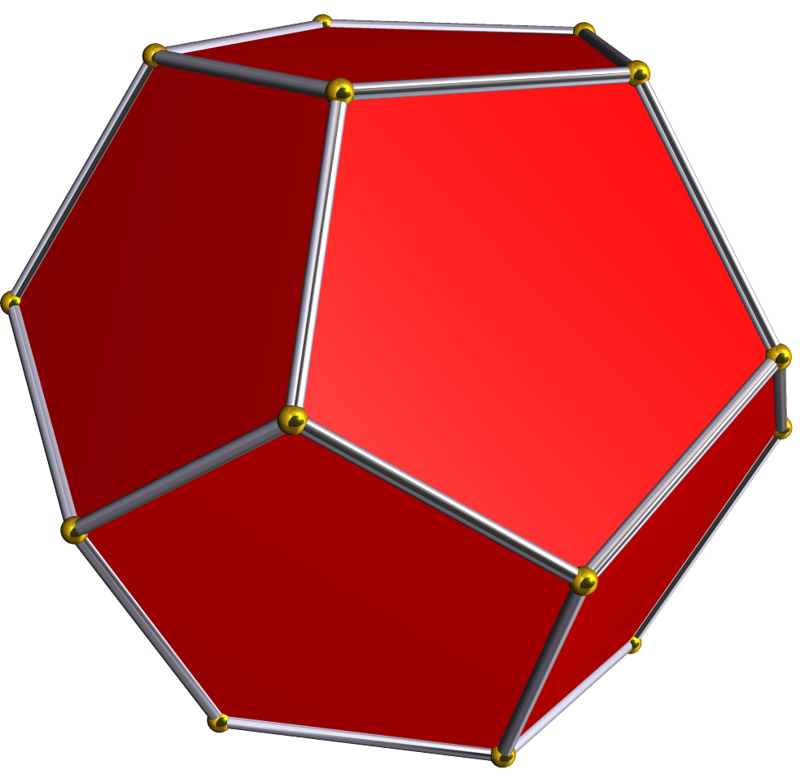
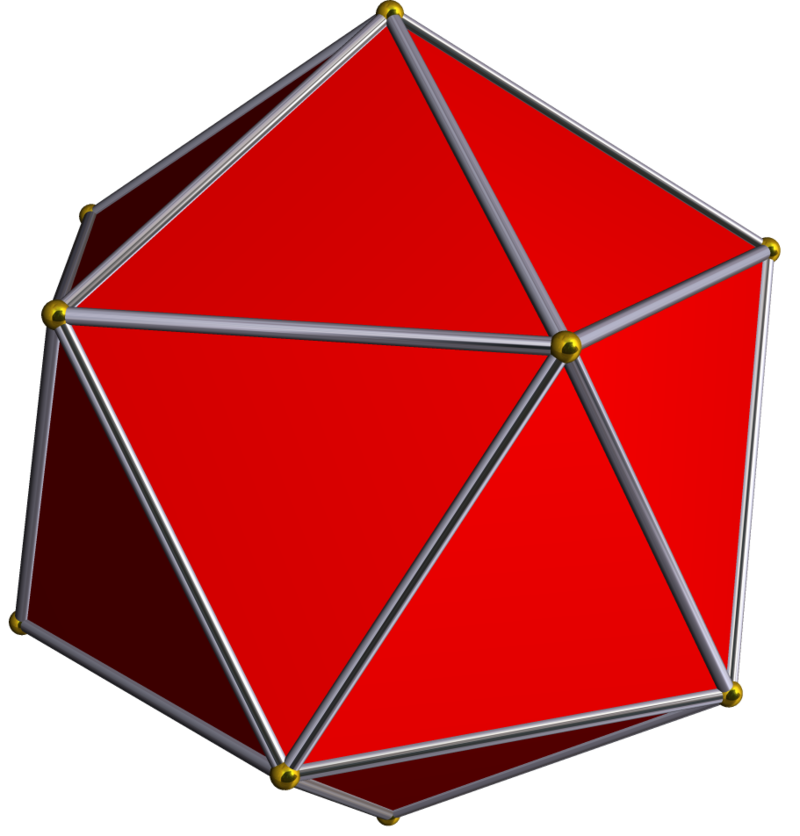

Dice (singular die or dice; from Old French dé; from Latin datum "something which is given or played" are small throwable objects with multiple resting positions, used for generating random numbers. Dice are suitable as gambling devices for games like craps and are also used in non-gambling tabletop games.
A traditional die is a cube, with each of its six faces showing a different number of dots (pips) from 1 to 6. When thrown or rolled, the die comes to rest showing on its upper surface a random integer from one to six, each value being equally likely. A variety of similar devices are also described as dice; such specialized dice may have polyhedral or irregular shapes and may have faces marked with symbols instead of numbers. They may be used to produce results other than one through six. Loaded and crooked dice are designed to favor some results over others for purposes of cheating or amusement.
A dice tray, a tray used to contain thrown dice, is sometimes used for gambling or board games, in particular to allow dice throws which do not interfere with other game pieces.

Dice have been used since before recorded history, and it is uncertain where they originated. The oldest known dice were excavated as part of a backgammon-like game set at the Burnt City,an archeological site in south-eastern Iran, estimated to be from between 2800–2500 BCE.Other excavations from ancient tombs in the Indus Valley civilization indicate a South Asian origin.
The Egyptian game of Senet was played with dice. Senet was played before 3000 BC and up to the 2nd century AD. It was likely a racing game, but there is no scholarly consensus on the rules of Senet. Dicing is mentioned as an Indian game in the Rigveda, Atharvaveda and the early Buddhist games list. There are several biblical references to "casting lots", as in Psalm, indicating that dicing (or a related activity) was commonplace when the psalm was composed. It is theorized that dice developed from the practice of fortunetelling with the talus of hoofed animals, colloquially known as "knucklebones", but knucklebones is not the oldest divination technique that incorporates randomness. Knucklebones was a game of skill played by women and children; a derivative form had the four sides of the bone receive different values and count as modern dice
Although gambling was illegal, many Romans were passionate gamblers who enjoyed dicing, which was known as aleam ludere ("to play at dice"). Dicing was even a popular pastime of emperors. Letters by Augustus to Tacitus and his daughter recount his hobby of dicing. There were two sizes of Roman dice. Tali were large dice inscribed with one, three, four, and six on four sides. Tesserae were smaller dice with sides numbered from one to six. Twenty-sided dice date back to the 2nd century AD and from Ptolemaic Egypt as early as the 2nd century BC.
Dominoes and playing cards originated in China as developments from dice. The transition from dice to playing cards occurred in China around the Tang dynasty, and coincides with the technological transition from rolls of manuscripts to block printed books. In Japan, dice were used to play a popular game called sugoroku. There are two types of sugoroku. Ban-sugoroku is similar to backgammon and dates to the Heian period, while e-sugoroku is a racing game.
Common dice are small cubes most commonly 1.6 cm (0.63 in) across,[citation needed] whose faces are numbered from one to six, usually by patterns of round dots called pips. (While the use of Hindu-Arabic numerals is occasionally seen, such dice are less common.)
Opposite sides of a modern die traditionally add up to seven, implying that the 1, 2 and 3 faces share a vertex.[14] The faces of a die may be placed clockwise or counterclockwise about this vertex. If the 1, 2 and 3 faces run counterclockwise, the die is called "right-handed", and if those faces run clockwise, the die is called "left-handed". Western dice are normally right-handed, and Chinese dice are normally left-handed
The pips on dice are arranged in specific patterns as shown. Asian style dice bear similar patterns to Western ones, but the pips are closer to the center of the face; in addition, the pips are differently sized on Asian style dice, and the pips are colored red on the 1 and 4 sides. One possible explanation is that red fours are of Indian origin. In some older sets, the "one" pip is a colorless depression.
Non-precision dice are manufactured via the plastic injection molding process. The pips or numbers on the die are a part of the mold. The coloring for numbering is achieved by submerging the die entirely in paint, which is allowed to dry. The die is then polished via a tumble finishing process similar to rock polishing. The abrasive agent scrapes off all of the paint except for the indents of the numbering. A finer abrasive is then used to polish the die. This process also creates the smoother, rounded edges on the dice
Precision casino dice may have a polished or sand finish, making them transparent or translucent respectively. Casino dice have their pips drilled, then filled flush with a paint of the same density as the material used for the dice, such that the center of gravity of the dice is as close to the geometric center as possible. All such dice are stamped with a serial number to prevent potential cheaters from substituting a die. Precision backgammon dice are made the same way; they tend to be slightly smaller and have rounded corners and edges, to allow better movement inside the dice cup and stop forceful rolls from damaging the playing surface.
Dice are often sold in sets, matching in color, of six different shapes. Five of the dice are shaped like the Platonic solids, whose faces are regular polygons. Aside from the cube, the other four Platonic solids have 4, 8, 12, and 20 faces, allowing for those number ranges to be generated. The only other common non-cubical die is the 10-sided die, a pentagonal trapezohedron die, whose faces are ten kites, each with two different edge lengths, three different angles, and two different kinds of vertices. Such sets frequently include a second 10-sided die either of contrasting color or numbered by tens, allowing for a pair of 10-sided dice to generate numbers between 1 and 100.
Using these dice in various ways, games can closely approximate the real probability distributions of the events they simulate. For instance, 10-sided dice can be rolled in pairs to produce a uniform distribution of random percentages, and summing the values of multiple dice will produce approximations to normal distributions.Unlike other common dice, a four-sided die does not have a side that faces upward when it is at rest on a surface, so it has to be read in a different way. Many such dice have the numbers printed around the points, so that when it settles, the numbers at the vertex pointing up are the same and are read. Alternatively, the numbers on a tetrahedral die can be placed at the middles of the edges, in which case the numbers around the base are read.
Normally, the faces on a die will be placed so opposite faces will add up to one more than the number of faces (this is not possible with 4-sided dice and dice with an odd-number of faces). Some dice, such as those with 10 sides, are usually numbered sequentially beginning with 0, in which case the opposite faces will add to one less than the number of faces.
Sides | |||
| 4 | Tetrahedron |  | Each face has three numbers, arranged such that the upright number, placed either near the vertex or near the opposite edge, is the same on all three visible faces. The upright numbers represent the value of the roll. This die does not roll well and thus it is usually thrown into the air instead. |
| 6 | Cube |  | A common die. The sum of the numbers on opposite faces is seven. |
| 8 | Octahedron |  | Each face is triangular and the die resembles two square pyramids attached base-to-base. Usually, the sum of the opposite faces is 9. |
| 10 | Pentagonal trapezohedron |  | Each face is a kite. The die has two sharp corners, where five kites meet, and ten blunter corners, where three kites meet. The ten faces usually bear numbers from zero to nine, rather than one to ten (zero being read as "ten" in many applications). Often all faces converge at one sharp corner, and the ones at the other. The sum of the numbers on opposite faces is usually 9 (if numbered 0–9) or 11 (if numbered 1–10). |
| 12 | Dodecahedron |  | Each face is a regular pentagon. The sum of the numbers on opposite faces is usually 13. |
| 20 | Icosahedron |  | Faces are equilateral triangles. Icosahedrons have been found dating to Roman/Ptolemaic times, but it is not known if they were used as gaming dice. Modern dice with 20 sides are sometimes numbered 0–9 twice as an alternative to 10-sided dice. The sum of the numbers on opposite faces is 21 if numbered 1–20. |